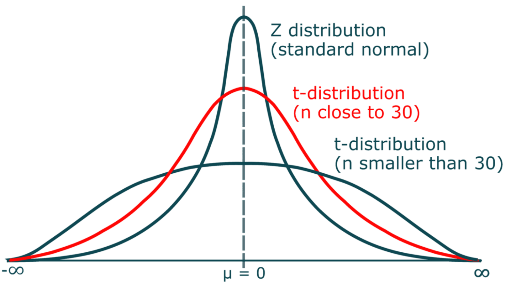
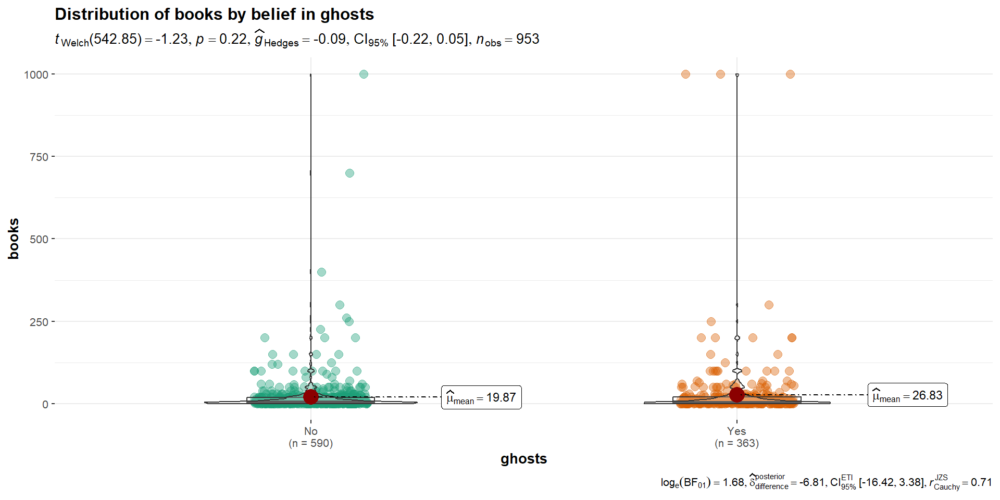
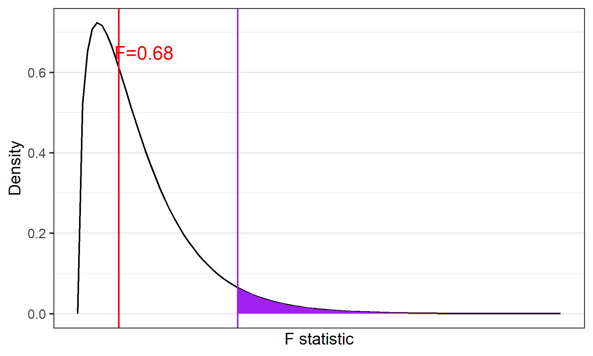
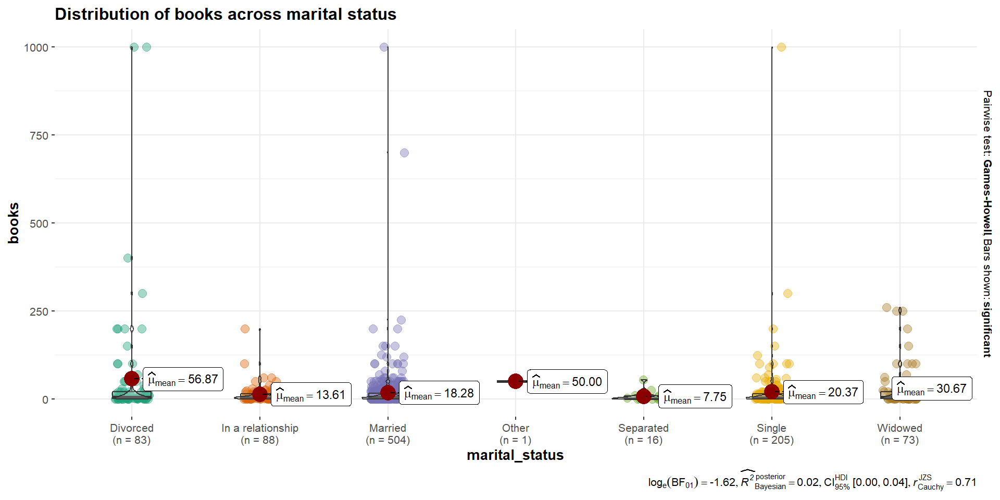
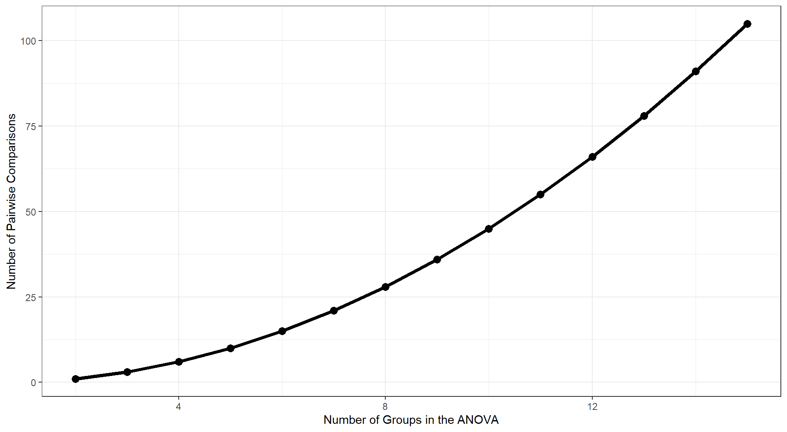
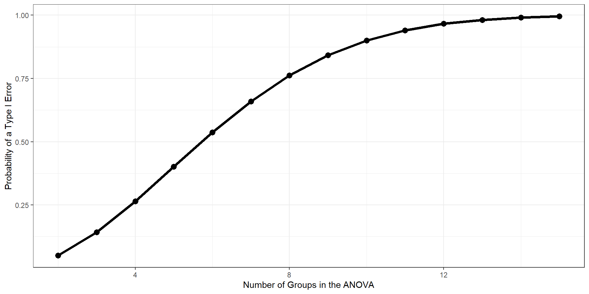

The heavier tails of the t-distribution, especially for small N, are the penalty we pay for having to estimate the population standard deviation from the sample.

Example
For examples today, we will use a dataset from Cards Against Humanity’s Pulse of the Nation survey (https://thepulseofthenation.com/)
## We are using read_csv() this time## import() was doing something strange with missing valuescah <-read_csv(here("files", "data", "CAH.csv")) %>% janitor::clean_names() head(cah)
# A tibble: 6 × 16
id income gender age age_range political_affiliation education ethnicity
<dbl> <dbl> <chr> <dbl> <chr> <chr> <chr> <chr>
1 1 8000 Female 64 55-64 Democrat College d… White
2 2 68000 Female 56 55-64 Democrat High scho… Black
3 3 46000 Male 63 55-64 Independent Some coll… White
4 4 51000 Male 48 45-54 Republican High scho… White
5 5 100000 Female 32 25-34 Democrat Some coll… White
6 6 54000 Female 64 55-64 Democrat Some coll… White
# ℹ 8 more variables: marital_status <chr>, climate_change <chr>,
# transformers <dbl>, books <dbl>, ghosts <chr>, spending <chr>,
# choice <chr>, shower_pee <chr>
Assumptions of the one-sample t-test
Normality. We assume the sampling distribution of the mean is normally distributed. Under what two conditions can we be assured that this is true?
Independence. Observations in the dataset are not associated with one another. Put another way, collecting a score from Participant A doesn’t tell me anything about what Participant B will say. How can we be safe in this assumption?
A brief example
Using the Cards Against Humanity data, we find that participants identified having approximately 22.33 ( \(sd = 75.87\) ) books in their home. We know that the average household has approximately 50 books. How does this sample represent the larger united states?
Hypotheses
\(H_0: \mu = 50\)
\(H_1: \mu \neq 50\)
\[\mu = 50\]
\[N = 1000\]
\[ \bar{X} = 22.33 \]
\[ s = 75.87 \]
t.test(x = cah$books, mu =50, alternative ="two.sided")
One Sample t-test
data: cah$books
t = -11.399, df = 976, p-value < 0.00000000000000022
alternative hypothesis: true mean is not equal to 50
95 percent confidence interval:
17.56785 27.09438
sample estimates:
mean of x
22.33112
lsr::oneSampleTTest(x = cah$books, mu =50, one.sided =FALSE)
One sample t-test
Data variable: cah$books
Descriptive statistics:
books
mean 22.331
std dev. 75.869
Hypotheses:
null: population mean equals 50
alternative: population mean not equal to 50
Test results:
t-statistic: -11.399
degrees of freedom: 976
p-value: <.001
Other information:
two-sided 95% confidence interval: [17.568, 27.094]
estimated effect size (Cohen's d): 0.365
Cohen’s D
Cohen suggested one of the most common effect size estimates—the standardized mean difference—useful when comparing a group mean to a population mean or two group means to each other.
\[\delta = \frac{\mu_1 - \mu_0}{\sigma} \approx d = \frac{\bar{X}-\mu}{\hat{\sigma}}\]
Cohen’s d is in the standard deviation (Z) metric.
Cohens’s d for these data is \(0.365\). In other words, the sample mean differs from the population mean by \(0.365\) standard deviation units.
Cohen (1988) suggests the following guidelines for interpreting the size of d:
.2 = Small
.5 = Medium
.8 = Large
Cohen, J. (1988), Statistical power analysis for the behavioral sciences (2nd Ed.). Hillsdale: Lawrence Erlbaum.
The usefulness of the one-sample t-test
How often will you conducted a one-sample t-test on raw data?
(Probably) never
How often will you come across one-sample t-tests?
(Probably) a lot!
The one-sample t-test is used to test coefficients in a model.
YOUR TURN 💻
Independent Samples t-test
Two different types: Student’s & Welch’s
Start with Student’s t-test which assumes equal variances between the groups
\[ t = \frac{\bar{X_1} - \bar{X_2}}{SE(\bar{X_1} - \bar{X_2})} \]
Two Sample t-test
data: books by ghosts
t = -1.3642, df = 951, p-value = 0.1728
alternative hypothesis: true difference in means between group No and group Yes is not equal to 0
95 percent confidence interval:
-16.98193 3.05404
sample estimates:
mean in group No mean in group Yes
19.86525 26.82920
Welch Two Sample t-test
data: books by ghosts
t = -1.2319, df = 542.85, p-value = 0.2185
alternative hypothesis: true difference in means between group No and group Yes is not equal to 0
95 percent confidence interval:
-18.068820 4.140927
sample estimates:
mean in group No mean in group Yes
19.86525 26.82920
Cool Visualizations
The library ggstatsplot has some wonderful visualizations of various tests
Code
ggstatsplot::ggbetweenstats( data = cah, x = ghosts, y = books, title ="Distribution of books by belief in ghosts" )

Interpreting and writing up an independent samples t-test
The first sentence usually conveys some descriptive information about the two groups you were comparing. Then you identify the type of test you conducted and what was determined (be sure to include the “stat block” here as well with the t-statistic, df, p-value, CI and Effect size). Finish it up by putting that into person words and saying what that means.
The mean amount of books in the household for the group who did not believe in ghosts was 19.9 (SD = 61.2), while the mean for those who believed in ghosts was 26.8 (SD = 96.4). A Student’s independent samples t-test showed that there was not a significant mean difference (t(951)=-1.364, p=.17, \(CI_{95}\)=[-16.98, 3.05]). This suggests that there is no difference in amount of books in their household as a function of belief in ghosts.
We have been testing means between two independent samples. Participants may be randomly assigned to the separate groups
This is limited to those types of study designs, but what if we have repeated measures?
We will then need to compare scores across people…the samples we are comparing now depend on one another and are paired
Paired Samples \(t\)-test
Each of the repeated measures (or pairs) can be viewed as a difference score
This reduces the analysis to a one-sample t-test of the difference score
We are comparing the sample (i.e., difference scores) to a population \(\mu\) = 0
Assumptions: Paired Samples
The variable of interest (difference scores):
Continuous (Interval/Ratio)
Have 2 groups (and only two groups) that are matched
Normally Distributed
Why paired samples??
Previously, we looked at independent samples \(t\)-tests, which we could do here as well (nobody will yell at you)
However, this would violate the assumption that the data points are independent of one another!
Within vs. Between-subjects
Within vs. Between Subjects
Paired Samples: Single Sample
Instead of focusing on these variables as being separate/independent, we need to be able to account for their dependency on one another
This is done by calculating a difference or change score for each participant
\[ D_i = X_{i1} - X_{i2} \]
Notice: The equation is set up as variable1 minus variable2. This will be important when we interpret the results
Paired Samples: Hypotheses & \(t\)-statistic
The hypotheses would then be:
\[ H_0: \mu_D = 0; H_1: \mu_D \neq 0 \]
And to calculate our t-statistic: \(t_{df=n-1} = \frac{\bar{D}}{SE(D)}\)
where the Standard Error of the difference score is: \(\frac{\hat{\sigma_D}}{\sqrt{N}}\)
Review of the t-test process
Collect Sample and define hypotheses
Set alpha level
Determine the sampling distribution (\(t\) distribution for now)
Identify the critical value that corresponds to alpha and df
Calculate test statistic for sample collected
Inspect & compare statistic to critical value; Calculate probability
Example 1: Simple (by hand)
Participants are placed in two differently colored rooms (counterbalanced) and are asked to rate overall happiness levels after spending 5 minutes inside the rooms. There are no windows, but there is a nice lamp and chair.
Hypotheses:
\(H_0:\) There is no difference in ratings of happiness between the rooms ( \(\mu = 0\) )
\(H_1:\) There is a difference in ratings of happiness between the rooms ( \(\mu \neq 0\) )
Can look things up using a t-table where you need the degrees of freedom and the alpha
But we have R to do those things for us:
#the qt() function is for a 1 tailed test, so we are having to divide it in half to get both tails alpha <-0.05n <-nrow(ex1) t_crit <-qt(alpha/2, n-1) t_crit
[1] -2.570582
Calculating t
Let’s get all of the information for the sample we are focusing on (difference scores):
d <-mean(ex1$diff_score) d
[1] -1.166667
sd_diff <-sd(ex1$diff_score) sd_diff
[1] 4.167333
Calculating t
Now we can calculate our \(t\)-statistic: \[t_{df=n-1} = \frac{\bar{D}}{\frac{sd_{diff}}{\sqrt{n}}}\]
t_stat <- d/(sd_diff/(sqrt(n))) t_stat
[1] -0.6857474
#Probability of this t-statistic p_val <-pt(t_stat, n-1)*2p_val
[1] 0.5233677
Make a decision
Hypotheses:
\(H_0:\) There is no difference in ratings of happiness between the rooms ( \(\mu = 0\) )
\(H_1:\) There is a difference in ratings of happiness between the rooms ( \(\mu \neq 0\) )
\(alpha\)
\(t-crit\)
\(t-statistic\)
\(p-value\)
0.05
\(\pm\) -2.57
-0.69
0.52
What can we conclude??
Example 2: Data in R
state_school <-read_csv("https://raw.githubusercontent.com/dharaden/dharaden.github.io/main/data/NM-NY_CAS.csv") %>%#create an ID variablerowid_to_column("id")
Let’s Look at the data
Research Question: Is there a difference between school nights and weekend nights for amount of time slept?
Only looking at the variables that we are potentially interested in:
state_school %>%select(id, Gender, Ageyears, Sleep_Hours_Schoolnight, Sleep_Hours_Non_Schoolnight) %>%head() #look at first few observations
Since we have calculated the difference scores, we can basically just do a one-sample t-test with the lsr library
oneSampleTTest(sleep_state_school$sleep_diff, mu =0)
One sample t-test
Data variable: sleep_state_school$sleep_diff
Descriptive statistics:
sleep_diff
mean -1.866
std dev. 2.741
Hypotheses:
null: population mean equals 0
alternative: population mean not equal to 0
Test results:
t-statistic: -9.106
degrees of freedom: 178
p-value: <.001
Other information:
two-sided 95% confidence interval: [-2.27, -1.462]
estimated effect size (Cohen's d): 0.681
Doing the test in R: Paired Sample
Maybe we want to keep things separate and don’t want to calculate separate values. We can use pairedSamplesTTest() instead!
As you Google around to figure things out, you will likely see folks using t.test()
t.test(x = sleep_state_school$Sleep_Hours_Schoolnight, y = sleep_state_school$Sleep_Hours_Non_Schoolnight,paired =TRUE )
Paired t-test
data: sleep_state_school$Sleep_Hours_Schoolnight and sleep_state_school$Sleep_Hours_Non_Schoolnight
t = -9.1062, df = 178, p-value < 0.00000000000000022
alternative hypothesis: true mean difference is not equal to 0
95 percent confidence interval:
-2.270281 -1.461563
sample estimates:
mean difference
-1.865922
Reporting \(t\)-test
The first sentence usually conveys some descriptive information about the sample you were comparing (e.g., pre & post test).
Then you identify the type of test you conducted and what was determined (be sure to include the “stat block” here as well with the t-statistic, df, p-value, CI and Effect size).
Finish it up by putting that into person words and saying what that means.
The difference between the individual and their group mean
\[ SS_{within} = \sum^G_{k=1}\sum^{N_k}_{i=i}(Y_{ik} - \bar{Y_k})^2 \] Now we can sum the Squared Deviations together to get our Sum of Squares Within:
If the null hypothesis is true, \(F\) has an expected value close to 1 (numerator and denominator are estimates of the same variability)
If it is false, the numerator will likely be larger, because systematic, between-group differences contribute to the variance of the means, but not to variance within group.
data.frame(F =c(0,8)) %>%ggplot(aes(x = F)) +stat_function(fun =function(x) df(x, df1 =3, df2 =196), geom ="line") +stat_function(fun =function(x) df(x, df1 =3, df2 =196), geom ="area", xlim =c(2.65, 8), fill ="purple") +geom_vline(aes(xintercept =2.65), color ="purple") +geom_vline(aes(xintercept =0.68), color ="red") +annotate("text", label ="F=0.68", x =1.1, y =0.65, size =8, color ="red") +scale_y_continuous("Density") +scale_x_continuous("F statistic", breaks =NULL) +theme_bw(base_size =20)

What can we conclude?
Contrasts/Post-Hoc Tests
Performed when there is a significant difference among the groups to examine which groups are different
Contrasts: When we have a priori hypotheses
Post-hoc Tests: When we want to test everything
Reporting Results
Tables
Often times the output will be in the form of a table and then it is often reported this way in the manuscript
Source of Variation
df
Sum of Squares
Mean Squares
F-statistic
p-value
Group
\(G-1\)
\(SS_b\)
\(MS_b = \frac{SS_b}{df_b}\)
\(F = \frac{MS_b}{MS_w}\)
\(p\)
Residual
\(N-G\)
\(SS_w\)
\(MS_w = \frac{SS_w}{df_w}\)
Total
\(N-1\)
\(SS_{total}\)
In-Text
A one-way analysis of variance was used to test for differences in the [variable of interest/outcome variable] as a function of [whatever the factor is]. Specifically, differences in [variable of interest] were assessed for the [list different levels and be sure to include (M= , SD= )] . The one-way ANOVA revealed a significant/nonsignificant effect of [factor] on scores on the [variable of interest] (F(dfb, dfw) = f-ratio, p = p-value, η2 = effect size).
Planned comparisons were conducted to compare expected differences among the [however many groups] means. Planned contrasts revealed that participants in the [one of the conditions] had a greater/fewer [variable of interest] and then include the p-value. This same type of sentence is repeated for whichever contrasts you completed. Descriptive statistics were reported in Table 1.
One-Way ANOVA in R
Continuous_Variable ~ Group_Variable
Books by Marital Status
We can examine how many books (continuous) by marital status (7 categories: Married, Divorced, In a relationship, Other, Separated, Widowed, Single)
VISUALIZE!
ggbetweenstats(data = cah,x = marital_status,y = books,title ="Distribution of books across marital status")

Running the ANOVA
Use the same way we build a model and then get the summary of that model
aov_mar <-aov(books ~ marital_status, data = cah)summary(aov_mar)
Df Sum Sq Mean Sq F value Pr(>F)
marital_status 6 124027 20671 3.624 0.00146 **
Residuals 963 5492561 5704
---
Signif. codes: 0 '***' 0.001 '**' 0.01 '*' 0.05 '.' 0.1 ' ' 1
30 observations deleted due to missingness
Post-hoc Tests
Examine the basic summary statistics
Do pairwise comparisons between each of the groups, based on the model we created
# A tibble: 8 × 3
marital_status mean sd
<chr> <dbl> <dbl>
1 Divorced 56.9 165.
2 In a relationship 13.6 25.8
3 Married 18.3 59.5
4 Other 50 NA
5 Separated 7.75 14.3
6 Single 20.4 76.1
7 Widowed 30.7 59.0
8 <NA> 14 12.3
# conduct the comparisonsemmeans(aov_mar, pairwise ~ marital_status, adjust ="none")
$emmeans
marital_status emmean SE df lower.CL upper.CL
Divorced 56.87 8.29 963 40.61 73.1
In a relationship 13.61 8.05 963 -2.19 29.4
Married 18.28 3.36 963 11.68 24.9
Other 50.00 75.50 963 -98.21 198.2
Separated 7.75 18.90 963 -29.30 44.8
Single 20.37 5.27 963 10.01 30.7
Widowed 30.67 8.84 963 13.32 48.0
Confidence level used: 0.95
$contrasts
contrast estimate SE df t.ratio p.value
Divorced - In a relationship 43.26 11.60 963 3.744 0.0002
Divorced - Married 38.59 8.95 963 4.314 <.0001
Divorced - Other 6.87 76.00 963 0.090 0.9279
Divorced - Separated 49.12 20.60 963 2.382 0.0174
Divorced - Single 36.51 9.83 963 3.716 0.0002
Divorced - Widowed 26.20 12.10 963 2.162 0.0308
In a relationship - Married -4.67 8.73 963 -0.535 0.5929
In a relationship - Other -36.39 76.00 963 -0.479 0.6320
In a relationship - Separated 5.86 20.50 963 0.286 0.7752
In a relationship - Single -6.75 9.62 963 -0.702 0.4831
In a relationship - Widowed -17.06 12.00 963 -1.427 0.1540
Married - Other -31.72 75.60 963 -0.420 0.6749
Married - Separated 10.53 19.20 963 0.549 0.5831
Married - Single -2.09 6.26 963 -0.333 0.7389
Married - Widowed -12.39 9.46 963 -1.310 0.1904
Other - Separated 42.25 77.80 963 0.543 0.5874
Other - Single 29.63 75.70 963 0.391 0.6956
Other - Widowed 19.33 76.00 963 0.254 0.7994
Separated - Single -12.62 19.60 963 -0.644 0.5200
Separated - Widowed -22.92 20.80 963 -1.099 0.2718
Single - Widowed -10.31 10.30 963 -1.001 0.3170
Family-wise error
These pairwise comparisons can quickly grow in number as the number of Groups increases. With 3 (k) Groups, we have k(k-1)/2 = 3 possible pairwise comparisons.
As the number of groups in the ANOVA grows, the number of possible pairwise comparisons increases dramatically.

As the number of tests grows, and assuming the null hypothesis is true, the probability that we will make one or more Type I errors increases. To approximate the magnitude of the problem, we can assume that the multiple pairwise comparisons are independent. The probability that we don’t make a Type I error for one test is:
\[P(\text{No Type I}, 1 \text{ test}) = 1-\alpha\]
The probability that we don’t make a Type I error for two tests is:
\[P(\text{No Type I}, 2 \text{ test}) = (1-\alpha)(1-\alpha)\]
For C tests, the probability that we make no Type I errors is
\[P(\text{No Type I}, C \text{ tests}) = (1-\alpha)^C\]
We can then use the following to calculate the probability that we make one or more Type I errors in a collection of C independent tests.
\[P(\text{At least one Type I}, C \text{ tests}) = 1-(1-\alpha)^C\]
The Type I error inflation that accompanies multiple comparisons motivates the large number of “correction” procedures that have been developed.

Multiple comparisons, each tested with \(\alpha_{per-test}\), increases the family-wise \(\alpha\) level.
\[\large \alpha_{family-wise} = 1 - (1-\alpha_{per-test})^C\] Šidák showed that the family-wise a could be controlled to a desired level (e.g., .05) by changing the \(\alpha_{per-test}\) to:
$emmeans
marital_status emmean SE df lower.CL upper.CL
Divorced 56.87 8.29 963 40.61 73.1
In a relationship 13.61 8.05 963 -2.19 29.4
Married 18.28 3.36 963 11.68 24.9
Other 50.00 75.50 963 -98.21 198.2
Separated 7.75 18.90 963 -29.30 44.8
Single 20.37 5.27 963 10.01 30.7
Widowed 30.67 8.84 963 13.32 48.0
Confidence level used: 0.95
$contrasts
contrast estimate SE df t.ratio p.value
Divorced - In a relationship 43.26 11.60 963 3.744 0.0040
Divorced - Married 38.59 8.95 963 4.314 0.0004
Divorced - Other 6.87 76.00 963 0.090 1.0000
Divorced - Separated 49.12 20.60 963 2.382 0.3654
Divorced - Single 36.51 9.83 963 3.716 0.0045
Divorced - Widowed 26.20 12.10 963 2.162 0.6478
In a relationship - Married -4.67 8.73 963 -0.535 1.0000
In a relationship - Other -36.39 76.00 963 -0.479 1.0000
In a relationship - Separated 5.86 20.50 963 0.286 1.0000
In a relationship - Single -6.75 9.62 963 -0.702 1.0000
In a relationship - Widowed -17.06 12.00 963 -1.427 1.0000
Married - Other -31.72 75.60 963 -0.420 1.0000
Married - Separated 10.53 19.20 963 0.549 1.0000
Married - Single -2.09 6.26 963 -0.333 1.0000
Married - Widowed -12.39 9.46 963 -1.310 1.0000
Other - Separated 42.25 77.80 963 0.543 1.0000
Other - Single 29.63 75.70 963 0.391 1.0000
Other - Widowed 19.33 76.00 963 0.254 1.0000
Separated - Single -12.62 19.60 963 -0.644 1.0000
Separated - Widowed -22.92 20.80 963 -1.099 1.0000
Single - Widowed -10.31 10.30 963 -1.001 1.0000
P value adjustment: bonferroni method for 21 tests
The Bonferroni procedure is conservative. Other correction procedures have been developed that control family-wise Type I error at .05 but that are more powerful than the Bonferroni procedure. The most common one is the Holm procedure.
The Holm procedure does not make a constant adjustment to each per-test \(\alpha\). Instead it makes adjustments in stages depending on the relative size of each pairwise p-value.
Holm correction
Rank order the p-values from largest to smallest.
Start with the smallest p-value. Multiply it by its rank.
Go to the next smallest p-value. Multiply it by its rank. If the result is larger than the adjusted p-value of next smallest rank, keep it. Otherwise replace with the previous step adjusted p-value.
Repeat Step 3 for the remaining p-values.
Judge significance of each new p-value against \(\alpha = .05\).